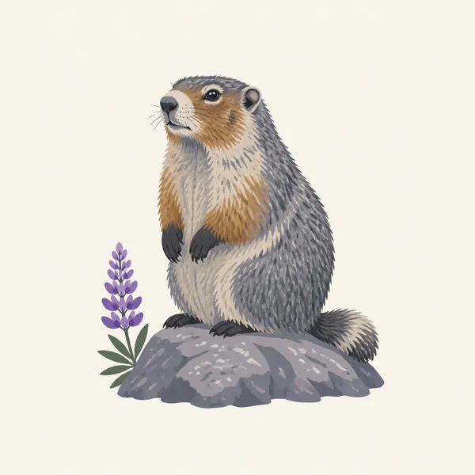
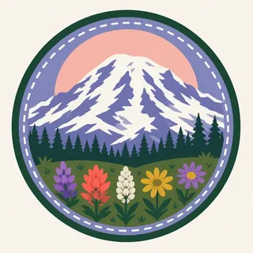

01
The summit
Mount Rainier rises 9,000 to 11,000 feet above valley floors only three to six miles away, reaching 14,410 feet at its icon over the Puget Sound lowlands.
TrailMark Archive Edition
Washington | Cascade Range
Congress made it the fifth national park on March 2, 1899, over a mountain Indigenous nations had already named Tahoma.
Archive No. TM-MORA-052
National Park since 1899
Collection Cascade Range
Park Overview
Congress established Mount Rainier as the nation's fifth national park on March 2, 1899. A lobbying campaign that began in 1893 among scientists, mountaineers, conservation groups, and railroads helped bring the bill to passage.
The park's press kit gives it at 236,381 acres, 97 percent of that designated wilderness, with an elevation range from about 1,700 feet to the 14,410-foot summit. Mount Rainier is an active volcano and the most heavily glaciated peak in the contiguous United States.
Twenty-eight named glaciers, covering 35 square miles, make up the largest single-mountain glacial system in the Lower 48, feeding five major river systems from a volcanic base spreading across about 100 square miles.
Emotional Thesis
The header painting sets the glaciated summit over a wildflower meadow and alpine lake at dusk, the kind of view Paradise offers in season. That framing, mountain over meadow, is the park's actual visitor experience at its most iconic overlooks.
The peak's history page records Indigenous names including Tahoma, Takhoma, Tacoma, Ta-co-bet, and others, used by the Cowlitz, Muckleshoot, Nisqually, Puyallup, Squaxin Island, Yakama, and Coast Salish nations, whose documented presence in the area reaches back at least 9,000 years.
Landscape Highlights
01
Mount Rainier rises 9,000 to 11,000 feet above valley floors only three to six miles away, reaching 14,410 feet at its icon over the Puget Sound lowlands.
02
The Emmons Glacier covers the most ground at 4.3 square miles; the Carbon Glacier reaches the lowest terminus elevation, 3,600 feet, of any glacier in the continental United States.
03
Wildflower meadows at Paradise and elsewhere bloom in a compressed high-elevation summer, the season the header painting captures.
Wildlife
Hoary marmots are, by the park's own nature notes, the high-country member of the mammal community, found on rock slides and boulder fields from about 3,800 feet to timberline. The extra drawing, a hoary marmot beside a lupine, is the archive's image of that alpine world.

01
Marmots hibernate more than half the year in underground tunnels, active only through the short subalpine summer.
02
Research on the park's marmot colonies records an average colony size of about 11 animals, evidence of a studied, not incidental, population.
03
Marmots and pikas are both named by NPS research as sensitive indicators of a changing mountain climate, their populations tracked for that reason.
Geology
Mount Rainier is an active stratovolcano, its slopes carrying 28 named glaciers across 35 square miles, the largest single-mountain glacial system anywhere in the contiguous United States.
01
The volcano's base spreads across roughly 100 square miles, rising 9,000 to 11,000 feet above valley floors just a few miles distant.
02
Glacier retreat has been documented and measured since 1896, making Rainier's ice one of the longest continuously observed glacial records in the country.
03
Five major river systems begin as glacial meltwater here, carrying the mountain's water to the lowlands below.
The short season for Paradise's wildflower meadows and for most trail and road access at higher elevations.
Meadows fade and snow returns to higher elevations; access narrows as the season progresses.
Heavy snowfall closes most high-elevation roads and trails; Paradise remains a popular snowshoe and ski destination when conditions allow.
Snowmelt is gradual at this elevation; meadows and higher trails can stay snow-covered well into the season.
Photography
A snow-covered peak alone could be photographed in almost any month. Wildflowers or a reflecting alpine lake in the same frame place the image within the park's brief bloom.
01
Alpine tarns near Paradise can mirror the summit on a still morning, doubling the mountain in frame.
02
Wildflower meadows are fragile and slow to recover; stay on trail rather than stepping into a bloom for a closer shot.
03
Rainier's scale and glacier coverage are specific; a distant, ice-free silhouette could be mistaken for a different mountain entirely.
Field Notes
The mountain had at least eleven names before English speakers gave it a twelfth, and the meadow under it blooms for a matter of weeks.
TrailMark Field Notes

Badge Story
The badge fails if it is a generic snow peak. Visible glacier texture on the dome and a hint of alpine meadow below are what claim this specific mountain.
Soft dusk pink and lavender sky, the way Paradise often photographs at golden hour.
Glacier texture on the peak, not a flat white triangle.
A hint of wildflower color at the base ties the badge to the meadow season.
Archive No.052
LocationCascade Range
ReleaseStratovolcano Mark
Stewardship / Safety
Mount Rainier is a monitored active volcano. Its glaciers, weather, and elevation carry real risk beyond what a roadside view suggests.
Stay on trail through subalpine meadows; off-trail foot traffic can take decades to recover at this elevation.
Climbing routes cross active glaciers; crevasse and icefall hazards require proper equipment and, often, a permit.
Volcanic hazard planning exists for a reason; know current conditions and evacuation routes before a visit.
Mountain weather changes fast; a clear meadow morning does not guarantee a clear summit afternoon.
Current conditions, fees, and alerts are on the National Park Service site.
Continue the Archive
Lassen last erupted in 1915 and is smaller in scale. Rainier carries the largest single-mountain glacier system in the Lower 48 on an active volcano nearly three times its neighbor's elevation. North Cascades, in this batch, is the jagged, heavily glaciated range just to the north.